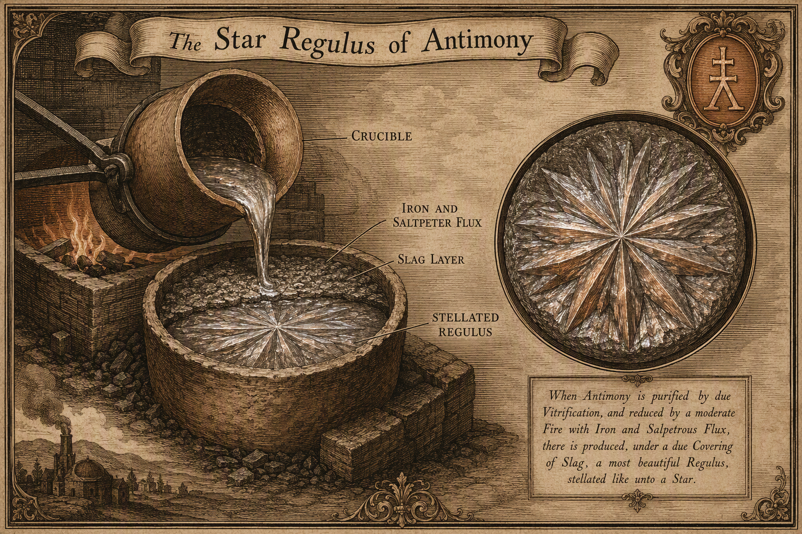
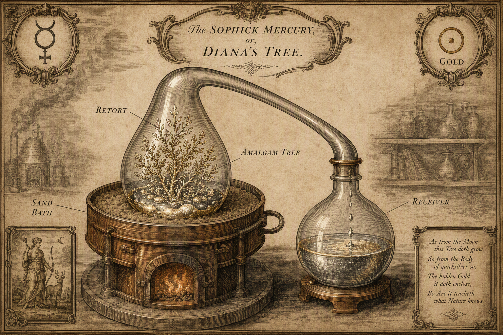
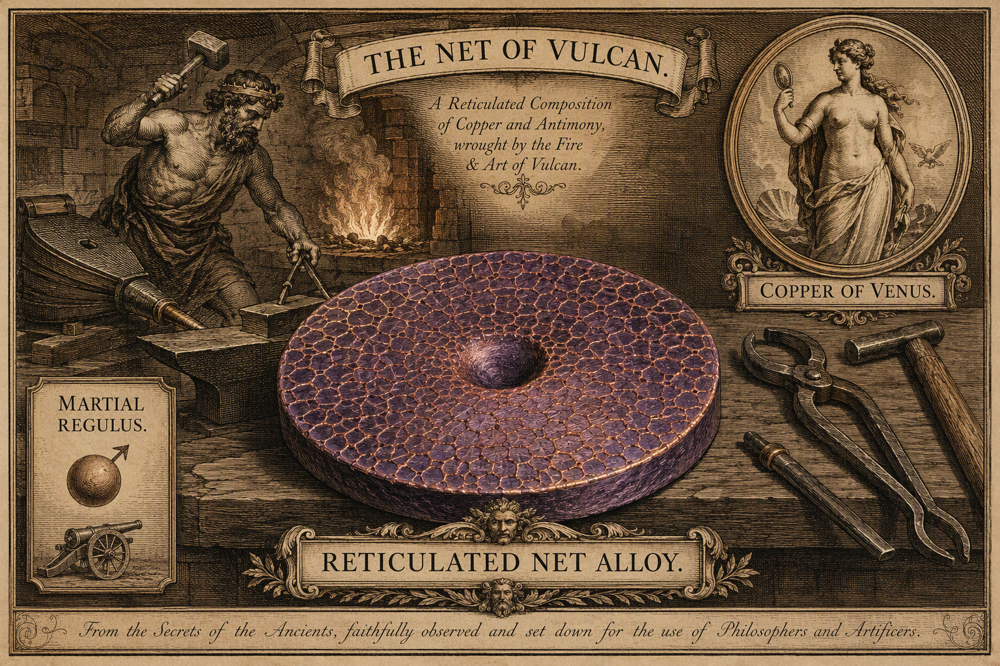
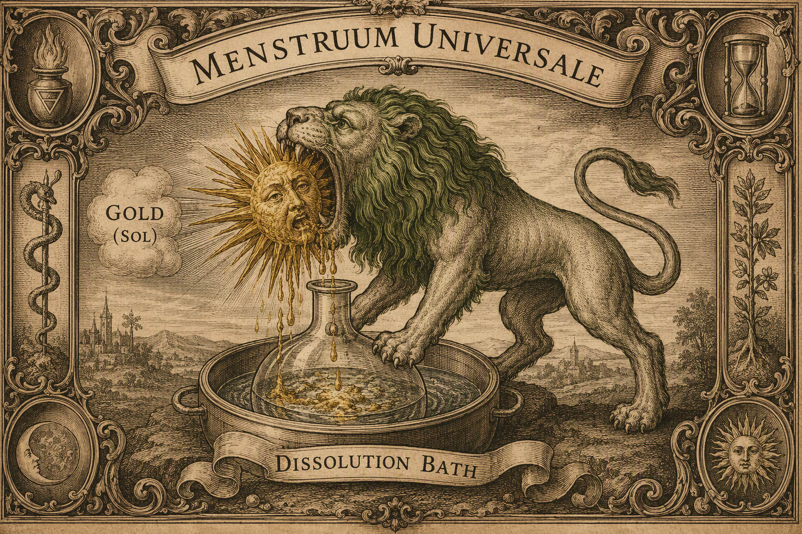
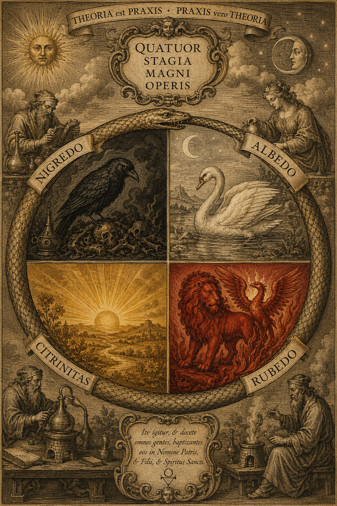

The Corpus
A million words, scattered and reassembled
Newton’s alchemical Nachlass — roughly one million surviving words — descended to the Portsmouth family, was declined by Cambridge University in 1888 as non-scientific, and went under the hammer at Sotheby’s in July 1936 for about £9,000. John Maynard Keynes bought most of the alchemy (now the Keynes MSS at King’s College, Cambridge); Abraham Yahuda bought the theology and some alchemy (now at the National Library of Israel); the laboratory notebooks stayed in the Portsmouth Collection at Cambridge University Library (Add. MSS 3973, 3975); Newton’s own treatise Praxis is Babson MS 420 at the Huntington.1
The reassembly is digital: the Chymistry of Isaac Newton project at Indiana University, directed by William R. Newman, is producing diplomatic and normalized transcriptions linked to manuscript images — work that drove a Unicode block of alchemical symbols into existence.2 Newton’s favorite author emerges clearly from the notebooks: George Starkey, writing as “Eirenaeus Philalethes,” whose Decknamen (cover-names) Newton decoded and tested at the bench.
The Index Chemicus method
The Index Chemicus (Keynes MS 30, drafted through the 1680s; final form 96 folios) is a concordance of cover-name headwords — “Green Lyon,” “Caduceus,” “Hollow Oak,” “Net of Vulcan” — with cross-author citations. The working method was: close reading, cross-author comparison, then bench testing. Comparing this with Newton’s mathematical work is a modern methodological interpretation; it does not make the chymical claims proven. And it could fail: on 10 May 1681 Newton wrote that he had understood the “two doves of Diana” — then crossed it out; on 18 May he believed he had cracked Mercury’s caduceus — crossed out too.1 The self-cancelled entries are the archive’s favorite kind of evidence: a mind correcting itself in ink.
Process Interpretations and Their Limits
The Star Regulus of Antimony Scholarly reconstruction

Historical support. The Chymistry project reports reconstructing a crystalline antimony regulus. This supports a material interpretation of the sign in that source context; it does not authenticate every recipe carrying the name. Project account, laboratory reconstruction paragraphs.
Competing interpretations. A radiating surface may depend on composition, crystal orientation and growth history. Its appearance alone cannot certify purity, phase fractions or a unique preparation history.
Diagnostic question. Do phase identification, elemental composition and texture imaging distinguish specimens that share the visual sign? B7 now asks this as an inverse problem. Read the observable and control.
The Sophick Mercury Material practice; larger claim unresolved

The document. Newton copied texts associated with George Starkey. The Clavis is Starkey material transcribed by Newton, not Newton’s original composition. Chymistry attribution discussion; Newman’s 1987 study.
Modern interpretation. Amalgamation, phase separation and transport-controlled growth are candidate material processes. A dendritic image is not enough to select diffusion-limited aggregation over other growth dynamics. Historical preparations and the claimed transmuting agent are separate questions.
Evidence limit. The selected records do not establish production of the philosopher’s stone. Crossed-out interpretations and unsuccessful mixtures are useful historical evidence, but they must not be relabeled as a modern controlled null without its precise observation and comparison.
Next test. Compare synthetic branching generators and mass-accounting models. This site gives no mercury handling or synthesis procedure.
The Net of Vulcan Reported reconstruction

Historical support. The Chymistry project reports a purple copper–antimony alloy with a reticulated surface. Its description supports a metallurgical interpretation of the “net.” Source.
What remains uncertain. The older page assigned exact intermetallic phases, the purple color and the depression to one mechanism without specimen data. Surface films, phase mixtures and solidification history are competing explanations. Neither a generated plate nor elemental imaging alone establishes crystal phase.
Diagnostic question. Combine phase-sensitive diffraction, elemental mapping, surface optical measurements and documented specimen history; retain alternatives that fit the same visible mesh. The new identifiability model explains why several readouts are needed.
Diana’s Doves Context-specific reading
A silver-related reading is proposed within the Starkey/Philalethes manuscript tradition. It is not a universal dictionary for every “dove” in alchemical writing. The inherited archive reports Newton crossed out his May 1681 identification; that passage still needs image-level collation in the revised ledger.
Next step. Align the exact witness, author, date and neighboring operations before assigning a chemical referent. The process table records this as a textual problem, not a demonstrated assay.
The Green Lion Referent depends on the text

The inherited synthesis collected several associations for this cover-name and then illustrated a single acid-dissolution pathway. That narrowed the interpretation without adequate evidence. A solvent, mineral precursor or emblematic relation are possible readings in different texts; they must not be collapsed into one modern chemical.
Next step. Build an author-specific concordance with manuscript passages, operations, negative evidence and competing readings. A candidate translation must explain more of the sequence than the selected emblem alone. No hazardous dissolution recipe is given here.
The Caduceus Interpretation pending
The inherited account links the symbol to metallic or mercurial preparation and reports a crossed-out Newton identification. The current review has not collated that witness. Several paired-substance or symbolic readings remain possible; the symbol alone does not identify a recipe, double helix or physical energy channel.
Next gate: a dated passage and a complete local sequence, followed by explicit alternative interpretations. Current uncertainty ledger.
Aether & Spirit
The Boyle letter (1679) and the Hypothesis of Light (1675)
Newton’s two great aether texts are firmly documented. In the Hypothesis of Light (December 1675) he proposed an elastic aether pervading all space, bearing “electric and magnetic effluvia” and a “gravitating principle”:
In the 1679 letter to Boyle the aether does mechanical work — explaining refraction, diffraction, cohesion, capillary rise, and the action of menstruums — and ends with a gravity conjecture: aether finer toward Earth’s center, grosser aether above pushing bodies down. A mechanical density-gradient gravity, not an occult attraction.5 The texts grew from the alchemical treatise Of Natures obvious laws & processes in vegetation (Dibner MS 1031B), in which metals “vegetate” and the Earth is “a great animall” that “draws in aethereall breath.”
The correspondence with the modern quantum vacuum — omnipresent, active, not nothing — is graded Speculative: a genuine structural analogy (a plenum whose local state mediates interactions) that differs in every measurable particular. Michelson–Morley and the entire twentieth century stand between the two. Full argument: Atlas, Essay B.
The Scholarly Dispute
Four readings, one corpus
- Dobbs (Foundations 1975; Janus Faces 1991): alchemy central; a vegetative, active spirit mediating God and matter; intertwined with anti-Trinitarian theology. Critiqued Newman’s objection: the lab notebooks mention God once in 452 pages — in material copied from Starkey.
- Westfall (Never at Rest 1980): “profound conversion in 1679–80 under the combined influence of alchemy and orbital mechanics… the ultimate agent of nature would be a force acting between particles.” The classic alchemy→action-at-a-distance thesis. Contested
- Newman (Newton the Alchemist 2019): the Decknamen decode to real, reproducible lab operations — which refutes purely psychic readings as the texts’ primary content; alchemy supplied “active principles” underlying chymical phenomena and the later Queries on gravity. Proved the Clavis was copied from an unpublished Starkey manuscript — Dobbs acknowledged.6
- Principe (The Secrets of Alchemy 2013): “chymistry” was one discipline; read the texts via laboratory replication — he reproduced Boyle and Starkey processes, the stella antimonii, and Diana’s Tree (2018). Newton a serious chymist alongside Boyle and Starkey.
The alchemy→optics link is documented, not conjectured: Newton recorded Boyle’s analysis/resynthesis experiments (amber, antimony, niter) in the same notebook as the prism experiments, and the 1669 optics lectures borrow Boyle’s “redintegration” for recombining white light.6
The color stages and later psychological readings

The familiar black/white/yellow/red sequence varies with author and work. The previous page assigned modern compounds to colors and mapped those colors to Jungian stages without a passage-by-passage validation. These are separate dictionaries, and neither is uniquely determined by color.
Jung’s psychological interpretation belongs in cultural and intellectual history. It does not establish what a particular historical vessel contained. The next study records the actual text, competing chemical and symbolic readings, and a diagnostic observation for each. Authenticated Jung passages remain a reading target in this revision.
- Cambridge UL Add. MSS 3973, 3975 (lab notebooks, 452 pp.); Keynes MSS, King’s College Cambridge; Babson MS 420, Huntington Library. Corpus and custody: chymistry.org and newtonproject.ox.ac.uk. ↩
- The Chymistry of Isaac Newton project (Indiana University, dir. William R. Newman; NSF/NEH funded): chymistry.org. ↩
- Newman, Newton the Alchemist (Princeton, 2019); Principe, The Secrets of Alchemy (Chicago, 2013); BBC/NOVA replication film, Newton’s Dark Secrets (2005). ↩
- Starkey/Newton, Praeparatio mercurii ad lapidem…, Science History Institute (acquired 2016): sciencehistory.org. ↩
- Newton to Boyle, 28 Feb 1678/9, full text: newtonproject.ox.ac.uk, NATP00275; Hypothesis of Light (Dec. 1675). ↩
- W. R. Newman, “Newton’s Clavis as Starkey’s Key,” Isis 78 (1987): 564–74, doi.org/10.1086/354553. ↩